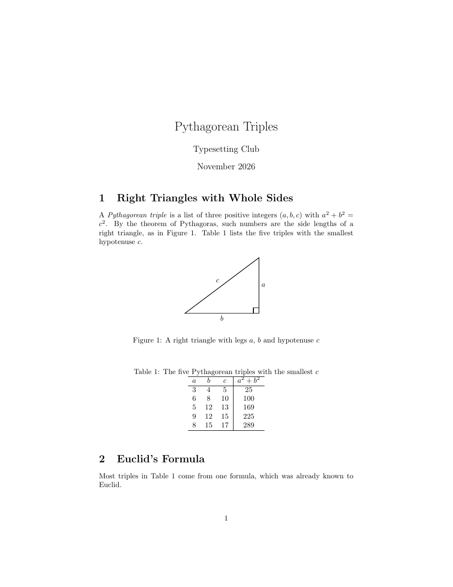
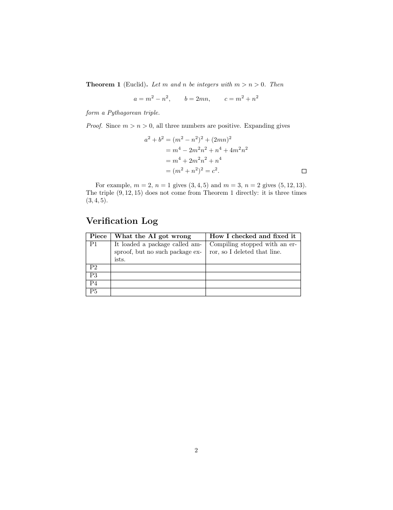

วัตถุประสงค์
เมื่อจบ Workshop นี้ นักศึกษาจะสามารถ
- เขียนพรอมต์ขอโค้ด LaTeX จาก AI ที่ระบุโปรแกรมที่ใช้คอมไพล์ แพ็กเกจที่อนุญาต และรูปแบบผลลัพธ์ที่ต้องการได้ชัดเจน
- ประกอบเอกสารทีละชิ้นจากคำตอบของ AI และคอมไพล์ตรวจทุกครั้งที่เพิ่มชิ้นใหม่
- ตรวจคำตอบของ AI ทั้งสามด้าน ได้แก่ คอมไพล์ผ่านหรือไม่ ผลตรงกับที่สั่งหรือไม่ และเนื้อหา (รวมคณิตศาสตร์) ถูกต้องหรือไม่
- รู้จักจุดผิดที่พบบ่อยในโค้ดจาก AI ได้แก่ แพ็กเกจที่ไม่มีอยู่จริง คำสั่งที่เลิกใช้แล้ว ป้ายอ้างอิงที่ไม่ตรงกัน และคำอธิบายที่มั่นใจแต่ผิด
ไฟล์ที่ได้รับ
ดาวน์โหลด drafting_with_ai.zip แล้วแตกไฟล์ไว้ในที่ที่หาง่าย จะได้โฟลเดอร์ drafting_with_ai ดังนี้
drafting_with_ai/
├── doc.pdf ชิ้นงานต้นแบบ (2 หน้า)
├── warmup.tex ไฟล์สั้น ๆ สำหรับ Part A
├── main.tex ไฟล์เริ่มต้นสำหรับ Part B
├── content.txt เนื้อหาทั้งหมดของ Part B ไม่ต้องพิมพ์ใหม่
├── prompts.txt พรอมต์สำหรับคัดลอกไปถาม AI (A1–A2 และ P1–P5)
├── ai_answers.txt ตัวอย่างคำตอบจาก AI ของทุกพรอมต์
└── triangle.pdf รูปสามเหลี่ยมมุมฉากสำหรับ Part Bดูไฟล์แยกทีละไฟล์ได้ที่
warmup.tex,
main.tex,
content.txt,
prompts.txt,
ai_answers.txt,
triangle.pdf
เตรียมเครื่อง
ประมาณ 10 นาที- เปิดโฟลเดอร์
drafting_with_aiใน Sublime Text และเปิดเทอร์มินัลในโฟลเดอร์เดียวกัน - เปิดแชตบอต AI ในเบราว์เซอร์ แล้วเริ่มแชตใหม่สำหรับ Workshop นี้
- เปิด
prompts.txtและai_answers.txtไว้ใน Sublime Text คำตอบตัวอย่างเป็นชุดเดียวกันทั้งชั้น จึงใช้คุยกันในชั้นเรียนได้ แม้แชตบอตของแต่ละคนจะตอบไม่เหมือนกัน
main.tex ตลอด และเปลี่ยนชื่อไฟล์เป็นรหัสนักศึกษาเฉพาะตอนส่งงานเท่านั้น
อุ่นเครื่อง
ประมาณ 25 นาทีใช้ไฟล์ warmup.tex ขอตารางจำนวนเฉพาะ 5 ตัวแรกและกำลังสองจาก AI สองแบบ แล้วเทียบกัน
- A0 คอมไพล์
warmup.texโดยยังไม่แก้อะไร เพื่อให้แน่ใจว่าไฟล์เริ่มต้นไม่มีปัญหา$ latexmk -pdf warmup.tex - A1 ถามแบบไม่ดี คัดลอกพรอมต์
[A1]จากprompts.txtไปถาม AI แล้ววางโค้ดจากคำตอบตัวอย่าง[A1]ในai_answers.txt(ตั้งแต่\documentclassถึง\end{document}) ใต้บรรทัด% A1-A4: ...แล้วคอมไพล์
พิมพ์ x แล้วกด Enter เพื่อหยุด! LaTeX Error: Can be used only in preamble.ทำไมจึงเกิดข้อผิดพลาดนี้ คำตอบใช้แพ็กเกจหรือคำสั่งใดที่ยังไม่ได้เรียน คำบรรยายตารางอยู่ด้านบนหรือด้านล่าง
- A2 ถามแบบดี ลบสิ่งที่วางไว้ใน A1 แล้วคัดลอกพรอมต์
[A2]ไปถาม AI ในแชตใหม่ วางคำตอบตัวอย่าง[A2]แล้วคอมไพล์พรอมต์ A2 บอกอะไรเพิ่มจาก A1 บ้าง ข้อใดทำให้คำตอบวางลงในไฟล์ได้ทันที
- A3 เทียบกับคำตอบของตนเอง วางคำตอบจากแชตบอตของนักศึกษาต่อท้ายตารางแรก แล้วคอมไพล์
คำตอบทั้งสองเหมือนกันทุกบรรทัดหรือไม่ ทำตามทุกข้อในพรอมต์หรือไม่ (เส้น หัวคอลัมน์ ไม่มีแพ็กเกจเพิ่ม)
- A4 ตรวจเนื้อหา คำนวณเองว่าจำนวนเฉพาะ 5 ตัวแรกและกำลังสองถูกต้องหรือไม่
ถ้า AI ใส่ 1 หรือ 9 เป็นจำนวนเฉพาะ คอมไพเลอร์จะเตือนหรือไม่ ใครต้องตรวจเรื่องนี้
งานหลัก
ประมาณ 65 นาทีสร้างบทความ 2 หน้าใน main.tex ให้เหมือน doc.pdf มากที่สุด โดยให้ AI ร่างทีละชิ้น (P1–P5) และเขียนข้อความที่เหลือจาก content.txt เอง ทำไปตามลำดับของเอกสาร กล่าวคือ ใส่ข้อความของแต่ละหัวข้อก่อนวางชิ้นที่อยู่ในหัวข้อนั้น คอมไพล์ด้วย
$ latexmk -pdf main.tex

ขั้นตอนสำหรับแต่ละชิ้น
- คัดลอกพรอมต์ของชิ้นนั้นจาก
prompts.txtไปถามแชตบอตของตนเอง - เทียบคำตอบที่ได้กับคำตอบตัวอย่างใน
ai_answers.txtคำตอบตัวอย่างทุกชิ้นมีจุดผิด คำตอบของนักศึกษาเองอาจมีหรือไม่มีก็ได้ - วางโค้ดชิ้นนั้นลงใน
main.texคอมไพล์ แล้วเทียบกับdoc.pdf - แก้จนผลตรงกับ
doc.pdfแล้วบันทึกจุดผิดของคำตอบตัวอย่างและวิธีที่ตรวจพบลงในตาราง Verification Log หนึ่งแถว
- P1 ส่วนนำและหัวเรื่อง คำตอบตัวอย่างมีบรรทัด
\documentclassอยู่แล้ว ถ้าวางใต้บรรทัด\documentclassเดิมของmain.texจะได้
เมื่อแก้แล้ว จะพบข้อความนี้ (ที่! LaTeX Error: Two \documentclass or \documentstyle commands.Enter file name:พิมพ์ x แล้วกด Enter เพื่อหยุด)
แถว P1 ของตารางเติมไว้ให้เป็นตัวอย่างแล้ว! LaTeX Error: File `amsproof.sty' not found.วันที่บนหัวเรื่องตรงกับ
doc.pdfหรือไม่ พรอมต์สั่งไว้อย่างไร - P2 รูปภาพ วางหลังย่อหน้าแรกของหัวข้อ 1
! LaTeX Error: Unknown float option `H'.คำอธิบายใต้โค้ดตัวอย่างบอกว่า
[H]ทำอะไร ทำไมจึงใช้ไม่ได้ในเอกสารนี้ ขนาดรูปตรงกับที่สั่งหรือไม่ - P3 ตาราง วางต่อจากรูป คอมไพล์ผ่าน แต่ latexmk สรุปว่า
Latexmk: Summary of warnings from last run of *latex: Latex failed to resolve 1 reference(s)เทียบคำตอบกับพรอมต์ทีละข้อ (ตำแหน่งคำบรรยาย เส้นแนวตั้ง ชื่อป้าย) มีกี่ข้อที่ AI ไม่ได้ทำตาม
- P4 ทฤษฎีบท วางหลังย่อหน้าแรกของหัวข้อ 2
! LaTeX Error: Environment theorem undefined.คำตอบตัวอย่างบอกว่าไม่ต้องเพิ่มอะไรในส่วนนำ จริงหรือไม่ ทบทวนจากบทเรียน Theorems and Proofs และสังเกตการแสดงสมการด้วย
$$ - P5 บทพิสูจน์ วางต่อจากทฤษฎีบท ชิ้นนี้คอมไพล์ผ่านโดยไม่มีข้อความเตือนเลย
คำนวณ
(2mn)^2เองแล้วตรวจทุกบรรทัดของการคำนวณ บรรทัดใดผิด ระยะรอบเครื่องหมาย = และตำแหน่งสี่เหลี่ยมท้ายบทพิสูจน์ตรงกับdoc.pdfหรือไม่
คำแนะนำ
| ส่วนของชิ้นงาน | สิ่งที่ต้องใช้ |
|---|---|
| ข้อความในหัวข้อ 1 และ 2 | เขียนเองจาก content.txt ด้วย \section, \emph และ \ref ไม่ต้องถาม AI |
| รูปและตาราง | figure และ table ที่ตัวเลือก [ht], \caption ก่อน \label |
| ทฤษฎีบท | \newtheorem ในส่วนนำ, สมการแสดงผลแบบไม่มีหมายเลขด้วย \[ ... \] |
| บทพิสูจน์ | proof, align* และ \qedhere ท้ายบรรทัดสุดท้าย (คำสั่งใหม่ของ amsthm ย้ายสี่เหลี่ยมท้ายบทพิสูจน์มาไว้ในบรรทัดนั้น แทนที่จะขึ้นบรรทัดใหม่) |
| Verification Log | \section* และ tabular ที่มีคอลัมน์ p{...} สำหรับข้อความยาว |
คำใบ้เพิ่มเติม (เปิดดูเมื่อติด)
- ถ้า latexmk แจ้งว่าหา reference ไม่พบ ให้เทียบชื่อใน
\refกับ\labelทีละตัวอักษร - ถ้าไม่แน่ใจว่าแพ็กเกจมีอยู่จริงหรือไม่ ลองสั่ง
texdoc <ชื่อแพ็กเกจ>ในเทอร์มินัล - ถ้าคำตอบของแชตบอตตนเองไม่มีจุดผิดเลย ให้บันทึกในตารางจากคำตอบตัวอย่าง และเขียนว่าแชตบอตของตนตอบถูก
ส่งงาน
เปลี่ยนชื่อไฟล์เป็น drafting_with_ai_<รหัสนักศึกษา>.tex แล้วสั่ง latexmk -pdf drafting_with_ai_<รหัสนักศึกษา>.tex ส่งไฟล์ .tex และ .pdf (ไม่ต้องส่ง triangle.pdf)
รายการตรวจสอบก่อนส่ง
ท้าทาย
ไม่บังคับ · ประมาณ 20–30 นาทีทำเพิ่มในไฟล์ใหม่ ข้อใดก็ได้
- C1 ถ่ายภาพหน้าจอสมการในหน้า 2 ของ
doc.pdfแล้วขอให้ AI แปลงเป็นโค้ด LaTeX (ถ้าแชตบอตรับรูปภาพได้)โค้ดที่ได้ตรงกับต้นฉบับทุกตัวอักษรหรือไม่ จุดใดที่ต้องแก้
- C2 เขียนพรอมต์เองเพื่อขอบทพิสูจน์ว่าk เท่าของ Pythagorean triple ใด ๆ ยังเป็น Pythagorean triple แล้วตรวจคณิตศาสตร์ทุกบรรทัด
- C3 ขอให้ AI ช่วยเขียนตาราง triples เป็นภาษาไทยด้วย
thaispecAI บอกให้คอมไพล์ด้วยโปรแกรมใด ตรงกับที่เรียนใน Workshop เอกสารภาษาไทยและคำสั่งที่สร้างเอง หรือไม่
ข้อผิดพลาดที่พบบ่อย
| อาการ | สาเหตุและวิธีแก้ |
|---|---|
! LaTeX Error: Can be used only in preamble. |
วางเอกสารทั้งไฟล์จาก AI ลงกลางเนื้อหา ขอเฉพาะโค้ดส่วนที่จะวาง หรือคัดลอกเฉพาะส่วนระหว่าง \begin{document} และ \end{document} |
! LaTeX Error: Two \documentclass ... |
มี \documentclass สองบรรทัด ลบบรรทัดหนึ่งออก |
! LaTeX Error: File `....sty' not found. |
AI อาจแต่งชื่อแพ็กเกจขึ้นเอง ตรวจด้วย texdoc หรือค้นที่ CTAN ถ้าไม่มีอยู่จริงให้ลบบรรทัดนั้น |
! LaTeX Error: Unknown float option `H'. |
[H] ต้องใช้แพ็กเกจ float ใช้ [ht] ตามที่เรียนในบทเรียน Figures and Tables แทน |
! LaTeX Error: Environment theorem undefined. |
amsthm ไม่ได้สร้าง theorem ให้เอง ต้องประกาศด้วย \newtheorem ในส่วนนำ |
Table หรือ Figure แสดงเป็น ?? |
ชื่อใน \ref กับ \label ไม่ตรงกัน เทียบทีละตัวอักษร |
| คอมไพล์ผ่านแต่คณิตศาสตร์ผิด | คอมไพเลอร์ไม่ตรวจความถูกต้องของคณิตศาสตร์ ต้องคำนวณตรวจเองทุกบรรทัด |
แหล่งอ้างอิง
- สไลด์บทเรียน Typesetting with AI Assistance (Prompting for LaTeX, Typical AI Failures, The Verify Loop)
- สไลด์บทเรียน Figures and Tables, Mathematics และ Theorems and Proofs
- The Not So Short Introduction to LaTeX (เปิดด้วย
texdoc lshort)